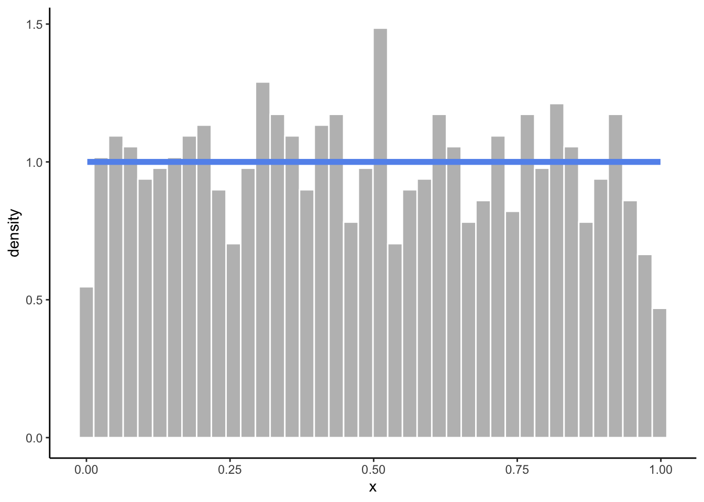
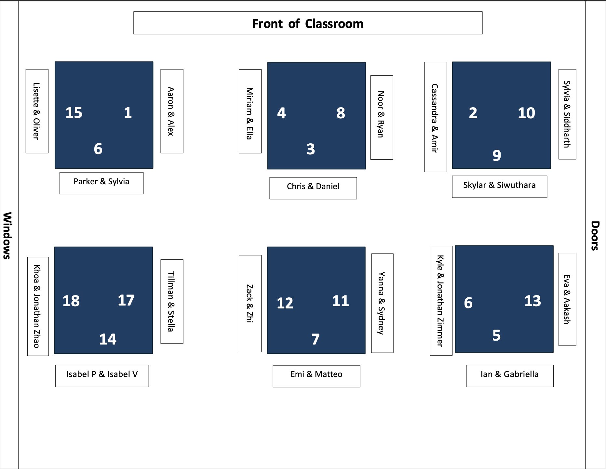
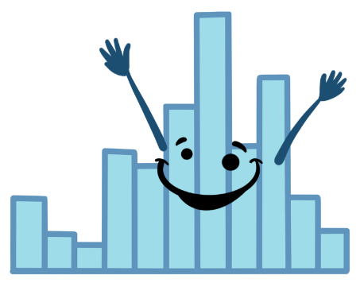
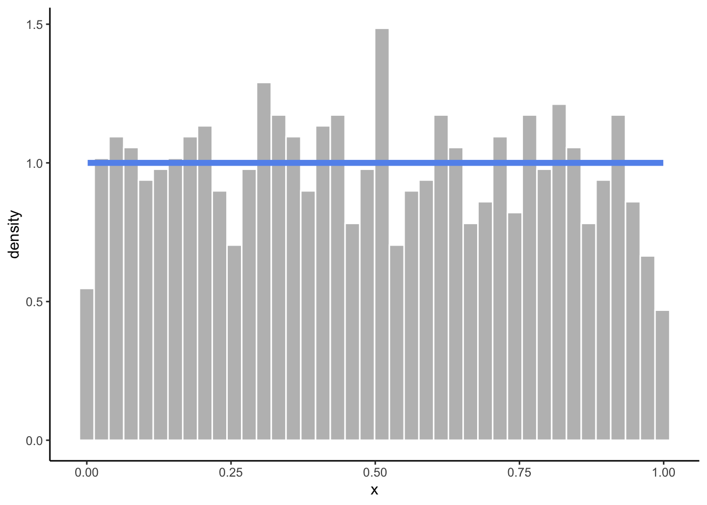
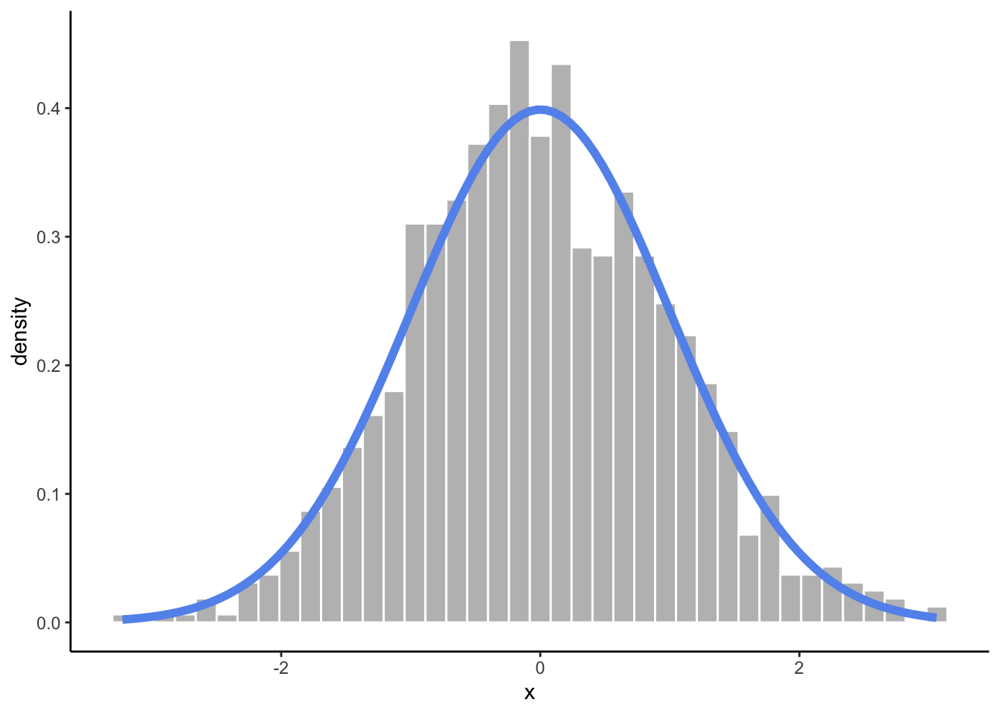
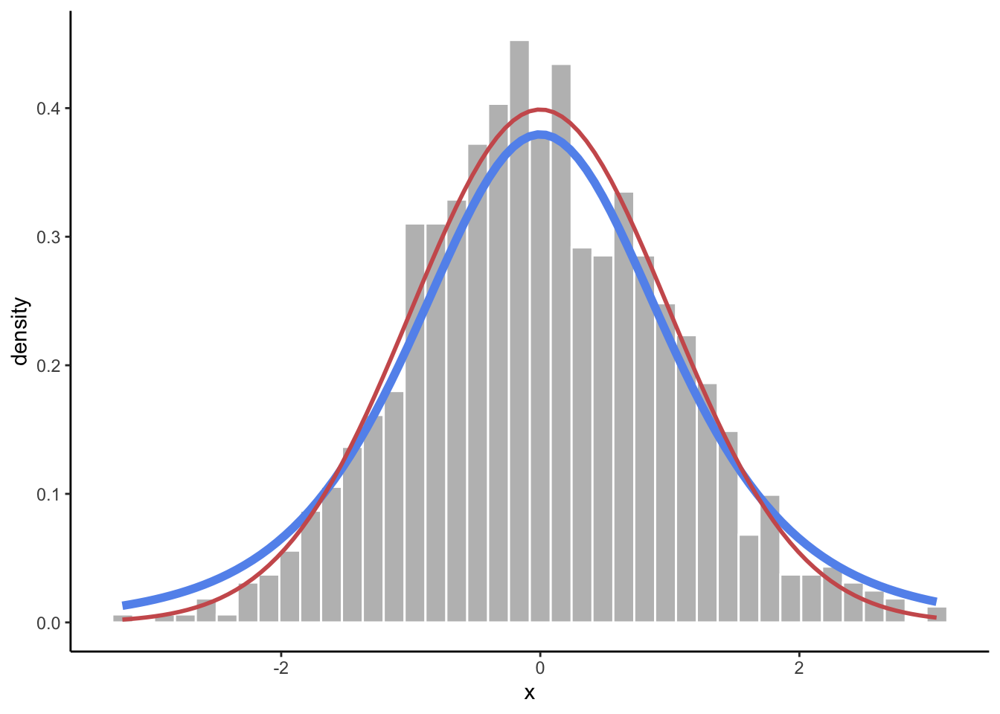
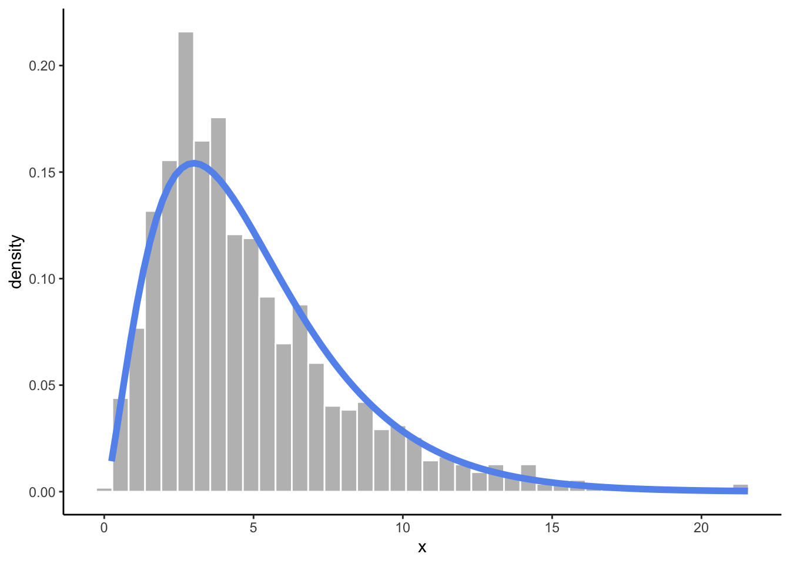
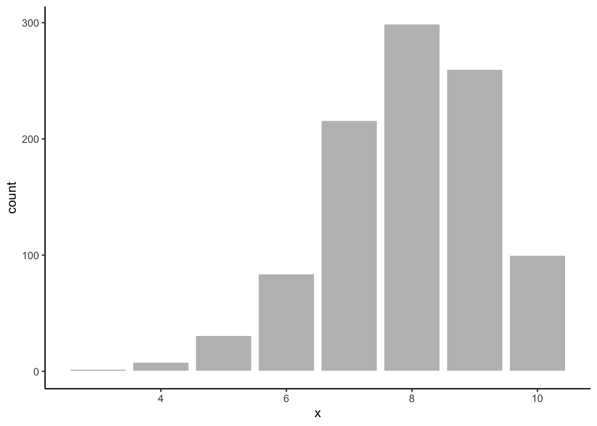

Warning: The dot-dot notation (`..density..`) was deprecated in ggplot2 3.4.0.
ℹ Please use `after_stat(density)` instead.

Today we will…
. . .
. . .
. . .
No revisions will be accepted on Lab 8 or Lab 9. You can, however, talk with me during class about any revisions you’ve made. :)
Recall from your statistics classes…
A random variable is a value we don’t know until we take a sample.
The distribution of a random variable tells us its possible values and how likely they are to occur.

Uniform Distribution
Warning: The dot-dot notation (`..density..`) was deprecated in ggplot2 3.4.0.
ℹ Please use `after_stat(density)` instead.
Normal Distribution

t-Distribution

Chi-Square Distribution

Binomial Distribution

r is for random sampling.
runif(n = 3, min = 10, max = 20)[1] 15.67038 18.68366 16.56338rnorm(n = 3)[1] 0.1500055 -2.1701357 -1.0249780rnorm(n = 3, mean = -100, sd = 50)[1] -129.3903 -139.7190 -111.2916rt(n = 3, df = 11)[1] 0.6417457 -1.8220935 -0.8508681rbinom(n = 3, size = 10, prob = 0.7)[1] 6 6 7rchisq(n = 3, df = 11)[1] 7.600302 25.594501 16.169046p is for probability.
x.pnorm(q = 1.5)[1] 0.9331928pnorm(q = 70, mean = 67, sd = 3)[1] 0.84134471 - pnorm(q = 70, mean = 67, sd = 3)[1] 0.1586553pnorm(q = 70, mean = 67, sd = 3, lower.tail = FALSE)[1] 0.1586553q is for quantile.
q functions are “backwards” of the p functions.qnorm(p = 0.95)[1] 1.644854qnorm(p = 0.95, mean = 67, sd = 3)[1] 71.93456d is for density.
Probability of exactly 12 heads in 20 coin tosses, with a 70% chance of tails?
dbinom(x = 12, size = 20, prob = 0.3)[1] 0.003859282We can generate fake data based on the assumption that a variable follows a certain distribution.
age <- runif(1000, min = 15, max = 75)Since there is randomness involved, we will get a different result each time we run the code.
runif(3, min = 15, max = 75)[1] 64.21904 54.08318 55.00578runif(3, min = 15, max = 75)[1] 46.36376 49.62596 52.67932To make a reproducible random sample, we first set the seed:
set.seed(93401)
runif(3, min = 15, max = 75)[1] 20.84739 51.61768 42.68515set.seed(93401)
runif(3, min = 15, max = 75)[1] 20.84739 51.61768 42.68515set.seed(435)
fake_data <- tibble(names = charlatan::ch_name(1000),
height = rnorm(1000, mean = 67, sd = 3),
age = runif(1000, min = 15, max = 75),
measure = rbinom(1000, size = 1, prob = 0.6)
) |>
mutate(supports_measure_A = ifelse(measure == 1, "yes", "no"))
head(fake_data)# A tibble: 6 × 5
names height age measure supports_measure_A
<chr> <dbl> <dbl> <int> <chr>
1 Elbridge Kautzer 67.4 66.3 1 yes
2 Brandon King 65.0 61.5 0 no
3 Phyllis Thompson 68.1 53.8 1 yes
4 Humberto Corwin 67.5 33.9 1 yes
5 Theresia Koelpin 71.4 16.1 1 yes
6 Hayden O'Reilly-Johns 66.2 37.0 0 no Check to see the ages look uniformly distributed.
fake_data |>
ggplot(mapping = aes(x = age,
fill = supports_measure_A)) +
geom_histogram(show.legend = F) +
facet_wrap(~ supports_measure_A,
ncol = 1) +
scale_fill_brewer(palette = "Paired") +
theme_bw() +
labs(x = "Age (years)",
y = "",
subtitle = "Number of Individuals Supportng Measure A for Different Ages",)`stat_bin()` using `bins = 30`. Pick better value with `binwidth`.
Is the instrument salesman selling fake instruments?
In this practice activity you and your partner will write a function to simulate the weight of various band instruments, with the goal of identifying whether a particular shipment of instruments has a “reasonable” weight.
. . .
This activity will require knowledge of:
None of us have all these abilities. Each of us has some of these abilities.
Every group should have a task card!
The table on distributions provides pictures on what each function (e.g., p, d, q) means
The list of distributions should help you decide what function to use (e.g., pchisq())
The person who whose birthday is closest to today starts as the Coder (giving instructions on what to type to the Developer)!
You and your partner together should address the following questions:
How many of these samples had a weight less than or equal to Professor Hill’s shipment?
Do you beleive Professor Hill ordered genuine instruments?